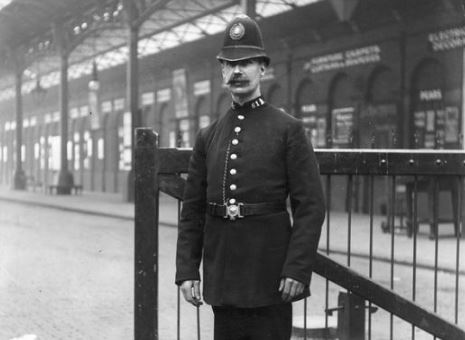
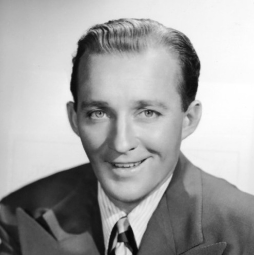

El imperio de terror del asesino Charlie Brown termina gracias a un policia retirado.
Te despiertas del coma, solo, y sin compañía, contrario a como siempre lo muestran en las películas, donde la persona que despierta de un coma es visto despertar por una enfermera o por su propia familia, y recuerdas lo que paso, te levantas y corres hacia la primera enfermera que ves, le preguntas sobre tu familia, pero tus músculos atrofiados te impiden seguir en pie y caes desplomado. Varios minutos después, un doctor viene acompañado de tu jefe, y nos deja a solas, quiebras el silencio entre los dos, y le preguntas que paso esa noche, tu jefe te responde que tiene información sobre el asesino de Manchester, extrañado respondes que tiene que ver un asesino con la noche de gracias, a lo que tu jefe responde Charlie Brown es el asesino de Manchester, quedas pasmado analizando cada palabra de tu jefe. Segundos después, tu jefe te hace volver al mundo real y dice las palabras que no querías escuchar, tu esposa Olivia, murió por una bomba a control remoto que se encontraba en el paquete de Charlie Brown, estabas desbastado, ya no solo habías quedado pasmado, sientes que tu mundo se desmorona, se te baja la presión, y estallas en llanto, un par de minutos después, le preguntas a tu jefe que en donde se encontraba tu familia, que porque todavía no habían llegado a verte, a lo que tu jefe te responde titubeando que tu familia había sido incluida en el programa de protección de testigos, sus nombres, apariencia, su paradero, todo cambiado, y lo más importante, sin poder comunicarse conmigo, probablemente por el resto de mi vida. Todo sin razón alguna, ¿tenía alguna idea ese Charlie que lo estaba investigando?
Estas yendo hacia tu casa, es noche de acción de gracias, tu madre, tu padre, esposa y niños están esperándote para celebrar esta festividad. Esperabas con ansias llegar a tu casa, estas exhausto y solo quieres beber un poco de tu wiski favorito y sentarte para dedicarle un poco de tiempo de calidad a tu familia, tiempo que no era lo suficiente, puesto que invertías horas extras para investigar el caso de un asesinato en Manchester, podrías decir que era un caso como cualquier otro, pero este era diferente, era un ataque tan bien organizado que parecía uno de los tantos golpes de la mafia, pero el problema es que no era un golpe de la mafia, de hecho la víctima era un civil como cualquier otro, no tenía lazos con ningún mafioso o criminal medianamente reconocido, por lo que, por más vueltas que le dieras, no tenía ningún sentido, elaborar un plan tan complicado de llevar a cabo para un solo civil. Pero eso ya no tenía importancia, por el momento, ya estas llegando a tu casa, tienes lo que queda de este día y el día de mañana para descansar y despejar la mente. Estas a dos manzanas de tu casa, llegas un poco tarde de lo acordado, pero no lo suficiente para que tu mujer te cacheteara, estas frente a tu familia, todos listos para comer, por lo que te dispones a comer con ellos, agradeces cada aspecto de tu vida, a tus hijos, a tu salud y la de los demás ahí presente. Unos minutos más tarde, ya con todos habiendo acabado de terminar de comer la cena, suena el timbre, te dispones a ir, pero tu esposa te frena y te dice que no te preocupes, que descanses y pase tiempo con los niños. Escuchas la puerta abrirse y a tu esposa diciendo que era un paquete que estaba en el frente de la casa, de parte de un tal Charlie Brown, te extrañas, puesto que no conoces a ningún Charlie Brown, por lo que decides ir hasta la puerta de tu casa, ves a tu esposa con su hermosa sonrisa y escuchas a lo lejos alguien gritar ¡Gracias, señor Jones!, seguido de una explosión, quedas tendido y caes en coma.
Pasaron alrededor de 3 años, no tienes familia y todo por una persona que hasta que terminaste la cena de noche acción de gracias ni siquiera sabias su nombre o al menos como era físicamente. Por lo que, decides viajar hasta Manchester, esto ya no era trabajo, era algo personal. Empleas el resto de tu vida para vengar a tu amada, pero primero tenías que averiguar porque esta persona se había interesado en ti, pero en menos de lo que cantaba un gallo él ya te había encontrado. Ves como un sobre pasa por el espacio entre el suelo y la puerta de tu despacho, vas hacia el sobre, el cual estaba firmado con una C y una B, le das la vuelta y ves dibujado un BOOM, te asustas y la abres desconfiado, pero lo que hay dentro del sobre es una simple carta burlándote de ti y al final de esta una locación, una hora y un dibujo de una pistola dentro de un signo de prohibido. Te alistas para encontrarse con ese infeliz, y te esperas lo peor, estas por entrar al restaurante que te indicaron en la carta y eres recibido por lo que parecía ser un gorila de la mafia, quien te cachea y te lleva a lo que parece ser un simple joven de unos 23 años, muy entusiasmado, al punto de estallar de alegría. A lo que te ves cara a cara con él, y de un grito dice — mucho gusto señor jones, me presento, soy Charlie Brown, tal vez me recordara del día de acción de gracias — a lo que procede a sentarse — Como vera señor Jones no ha pasado nada, ¡NADA! — a lo que, desconcertado, le preguntas que, si está bien, que es lo que quería que pasara. A lo que él, eufórico dice — Reconocimiento, señor Jones, reconocimiento. — Con una rabia impulsiva te diriges hacia su cuello, maldiciendo el día en que nació, mientras lo ahorcas, ves cómo la gente empieza a ver el espectáculo y como acto seguido con una expresión de excitación, Charlie, cae de la emoción, a lo cual es recogido por el gorila y llevado a su coche.
Decidido, vas y los persigues sigilosamente, cuidando que no te vean, mientras que Charlie, sigue excitado, y se estaban dirigiendo a lo que eran las afueras de la ciudad, las casas se asemejaban a las de un pueblo, y la casa más distintiva, como era de esperar, era a la que se dirigía Charlie Brown. Te estacionas lo suficientemente lejos para que no te vieran, y piensas en un plan, sabes que la situación es crítica, que de seguro Charlie debe de tener hombres a su disposición, por lo que decides avisar a la policía sobre el paradero del asesino de Manchester. Aunque tu objetivo no es precisamente que Charlie Brown se pudra en una cárcel. Te escabulles sigilosamente hacia dicha casa, noqueas al hombre que custodiaba la puerta principal y entras en la casa. Entonces ahí estaba, ante tus ojos el asesino asueldo más buscado de Inglaterra, Charlie Brown. Un tipo duro de encontrar, y no por nada lo habías encontrado, en lo que parecía ser su despacho o su piso franco. Nada más al verlo, tragas saliva, el asesino de tu esposa, que muchas veces decía que tu vida parecía ser uno de los tantos libros de Arthur Conan Doyle y no paraba de reírse cuando le decías que tu no tenías nada que ver ese tal Sherlock jones o algo así. Ya estás diciendo cosas sin sentido y no razonas bien y comienzas a ver diferentes momentos de tu vida, todo mientras ves lentamente a varios hombres de traje con armas pesadas apuntándote, y disparándolas al compás de las campanadas de las 6 pm. Pero te das cuenta de que no todo es en vano, puesto que en medio de tu poca estabilidad que está siendo consumida por el impacto de una lluvia de balas escuchas que la policía local llega y entra en la casa, y es ahí cuando puedes descansar en paz.